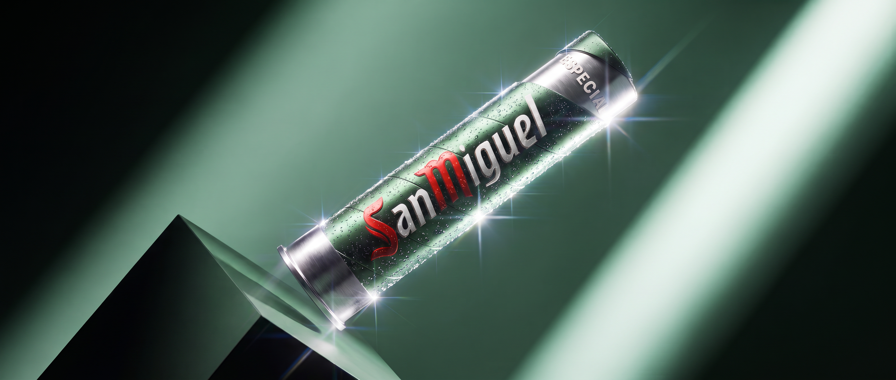
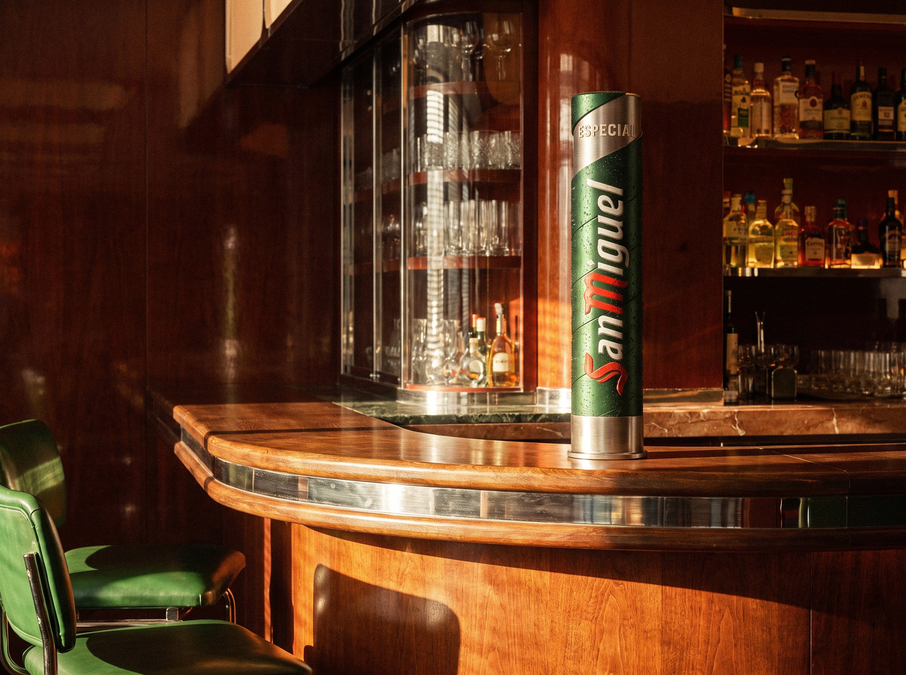
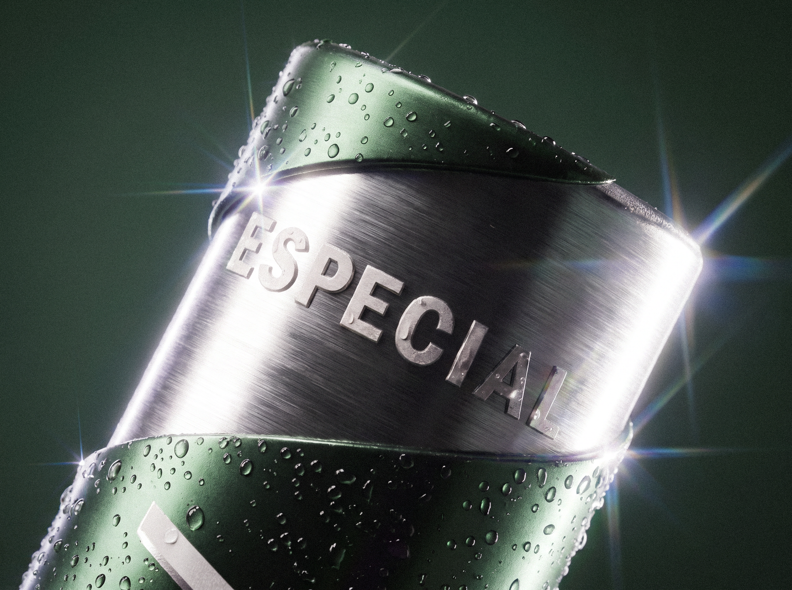
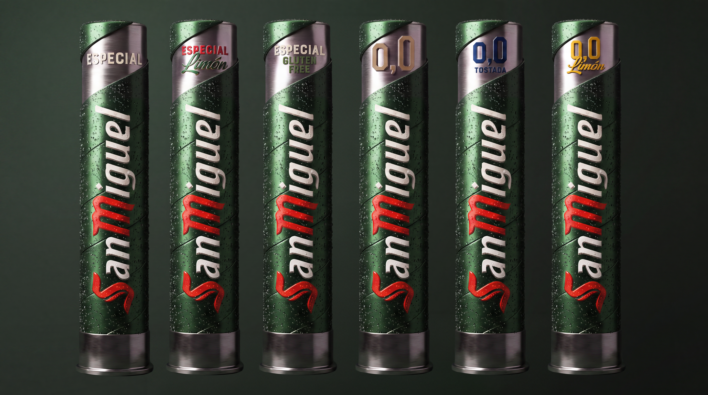
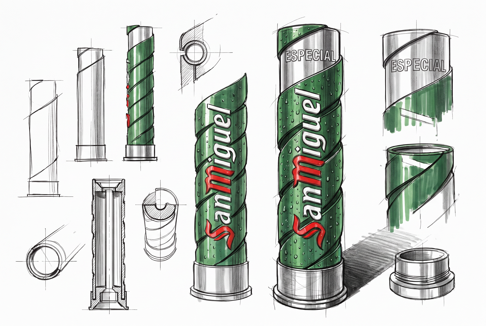

SAN MIGUEL
PREMIUM TAP
At the bar, the tap is one of the brand’s most visible touchpoints.
San Miguel wanted to turn its tap column in Spain into a piece that could elevate the brand’s perception, bring its visual codes up to date and strengthen its premium presence in hospitality. The new design was developed across the full San Miguel beer range, creating a coherent system with a bold, recognisable presence, built around metallic finishes, strong front-facing graphics and a silhouette designed to stand out even in the busiest bar environments.
The design reinterprets San Miguel’s visual codes through a more contemporary, distinctive and noticeable language, without losing what makes the brand instantly recognisable.

2026 VCCP AGENCY
FINAL PROJECT AT THE BAR


PREVIOUS SKETCHES